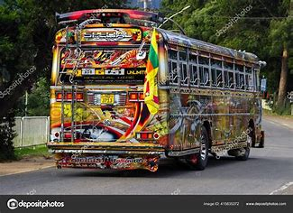

Origins of Bus Culture
Horse-Drawn Omnibuses (19th Century):
Origin: The earliest buses were horse-drawn carriages used for public transport in the early 1800s. Notable Example: The first omnibus service began in Nantes, France, in 1823, spreading to London and New York. Impact: These vehicles made transportation accessible to a broader population, initiating the idea of shared travel.Steam and Electric Buses (Late 19th Century):
Invention: The introduction of steam-powered buses in the 1830s and electric trolleybuses in the 1880s revolutionized public transport. Urban Integration: Cities began designing dedicated routes for buses, laying the foundation for modern bus networks. 20th Century: The Rise of Modern Buses Internal Combustion Engines (Early 1900s): Transition: Diesel and gasoline-powered buses replaced steam and electric models. Accessibility: Automobiles became more affordable, but buses remained the backbone of urban transport for many. Global Spread and Specialization: Intercity Buses: Companies like Greyhound in the U.S. popularized long-distance bus travel. School Buses: Dedicated buses for student transport became standardized in many countries, notably the iconic yellow school bus in the U.S. Public Transit: Cities around the world developed extensive bus networks for commuting. Cultural Influence: Media Representation: Buses became symbols in films, music, and literature, often representing communal experiences or social mobility. Subcultures: Buskers and street performers enriched the experience of bus stops and transit hubs. Bus Culture in the Modern Era Technological Innovations: Eco-Friendly Models: The introduction of electric and hybrid buses reflects environmental awareness. Smart Buses: GPS tracking, Wi-Fi, and digital ticketing have modernized the passenger experience. Global Variations:Asia:
Countries like India and Indonesia have vibrant and colorful bus cultures, often featuring decorated vehicles and lively bus stations. Africa: Shared minibuses, known by various names like matatus in Kenya or trotros in Ghana, play a crucial role in public transport. Western Countries: Double-decker buses in London and articulated buses in major cities are iconic. Social and Cultural Aspects: Community Spaces: Buses serve as venues for interaction among diverse social groups. Art and Advertising: Many buses are used as canvases for local art or mobile advertisements. Challenges and Future Directions Sustainability: Transitioning to fully electric bus fleets to combat climate change. Urban Development: Adapting to the needs of growing populations and urban sprawl. Cultural Significance: Preserving the unique characteristics of regional bus systems while embracing modernization. Bus culture has always been more than transportation—it's a reflection of societal needs, technological advancements, and cultural values.
